Tipos de funciones
Tipos de funciones
A continuación se muestran algunos de los principales tipos de funciones matemáticas, las cuales se clasifican en diferentes grupos dependiendo de su comportamiento y el tipo de relación que se establece entre las variables X e Y
Funciones polinómicas
Una función p es polinomial si 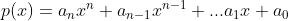 donde n es un entero no negativo, y los números 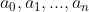 son constantes reales (denominados coeficientes del polinomio). Todos los polinomios tienen domino 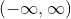. Un ejemplo de una función racional es la siguiente:
Funciones racionales
Una función racional es un cociente o una razón de dos funciones que son polinomios, de la forma 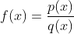, el dominio de una función racional es e cojunto de todos los número reales x para los que la función que es diferente de cero. Un ejemplo de una función racional es la siguiente:
Funciones exponenciales
Las funciones de la forma 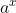, donde la base a > 0, es una constante positiva y 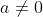, se demoniman funciones exponenciales. Todas las funciones exponenciales tienen dominio , y rango 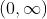 de manera que una función exponencial nunca toma el valor 0. Un ejemplo de una función exponencial es la siguiente:
Funciones logarítmicas
Éstas funciones tienen la forma 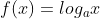, donde las base 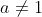 es una constante positiva. Su dominio es definido de tal manera que los parametros de la función toman siempre un valor positvo. Y el rango generalmente es
Funciones trigonométricas
Las funciones trigonométricas son de la forma:
- 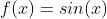 con dominio
y rango

- 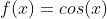 con dominio
y rango
- 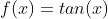 con dominio todos los multiplos de 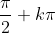 y rango
- 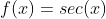 con dominio todos los multiplos de y rango 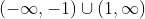
- 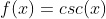 con dominio todos los multiplos de 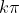 y rango
- 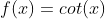 con dominio todos los multiplos de y rango
Ejercicios
Determine el tipo de función el cual está representado en la imagen